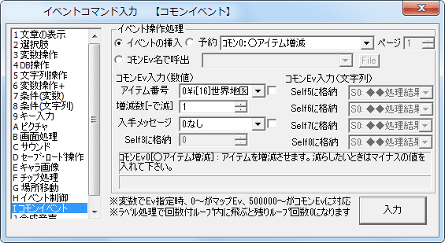

イベントコマンド 【その他2】
コモンイベントの呼び出し、またはラベル処理を行います。

【各機能の説明】
[イベントの挿入]
コモンイベントや、同マップの他のイベントを実行します。
コモンイベント側で入力を受け付けられるように設定されていた場合は、ここで入力を指定します。（上記画像中の「アイテム数」や「増減数[-で減]」
が入力です。これらは、コモンイベントの設定の★.「▼特」による特殊入力設定で設定されたものです）
【特殊機能】 マップイベントを呼び出す場合、0ページを指定すると起動中のページが呼び出されます（※初心者への誤解を避けるため、スピンボタンからではページ数を「1」未満にはできないようになっています、入力の際は数字キーを押してページ数に直接0を打ち込んでください）。イベントが存在しない場合は無視されます。
※指定した値は、入力1の値がそのコモンEvのSelf変数0に代入、入力2の値がコモンSelf変数1に代入……といった具合にコモンイベントの初期値が格納されます。文字列入力の場合は、入力1がSelf変数5に、入力2がSelf変数6に……という風に格納されます。
[予約]
現在のイベントの処理が全て終わった後、指定したイベントの処理を続けて実行します。実行時に引数が変化する可能性があることから、コモンイベントの引数の指定はできません。
[ｺﾓﾝEv名で呼出]
コモンイベントを名前で呼び出します。同一名称のコモンイベントが存在する場合、番号の大きい方が呼び出されます。
保存したコモンイベント(.common)のアドレスを指定して呼び出すこともできます。
※ただし「複数保存」したコモンイベントの場合は、実行されるのは一番先頭のものとなります。
入力も指定可能ですが、セルフ0～3、5～8全てに指定が必要です。